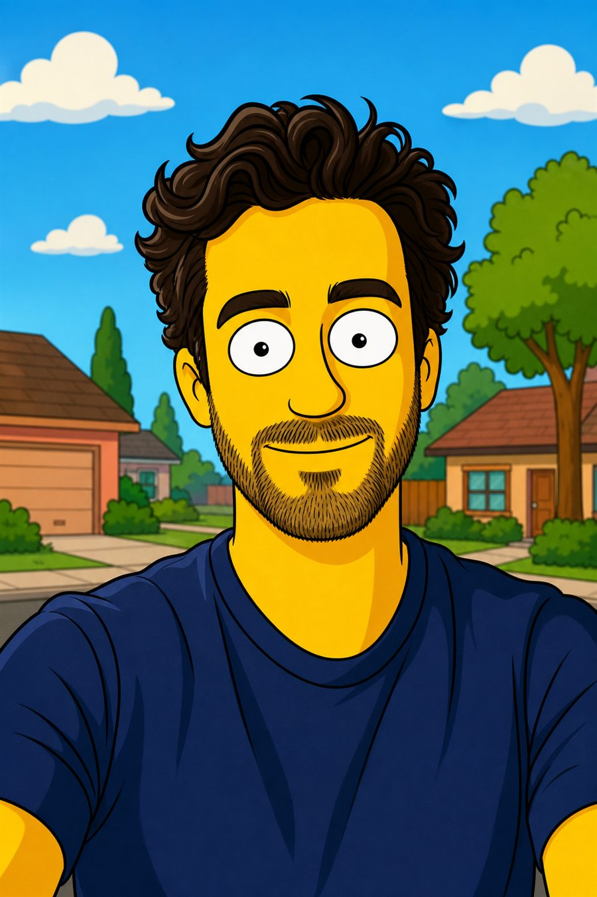
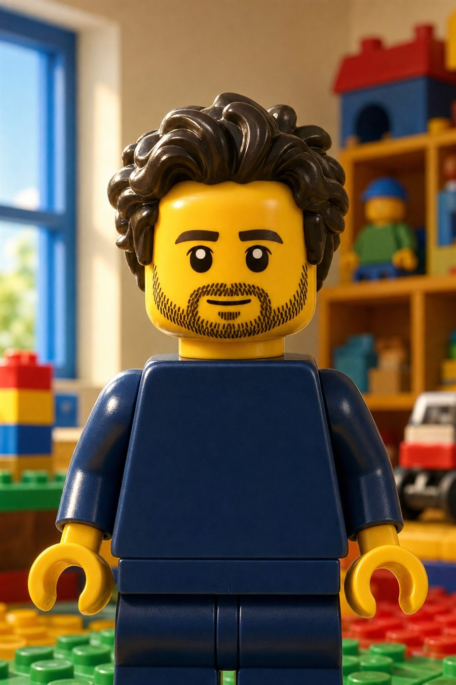
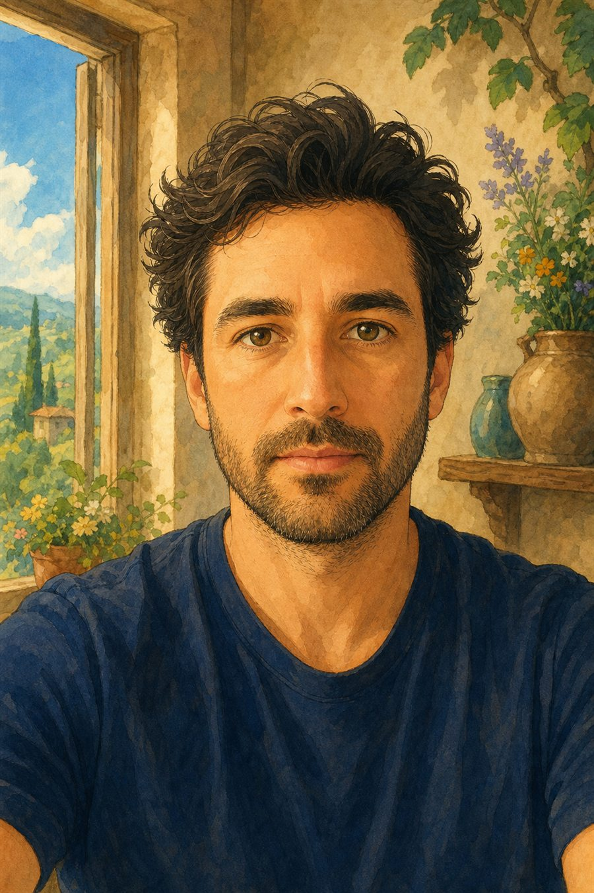
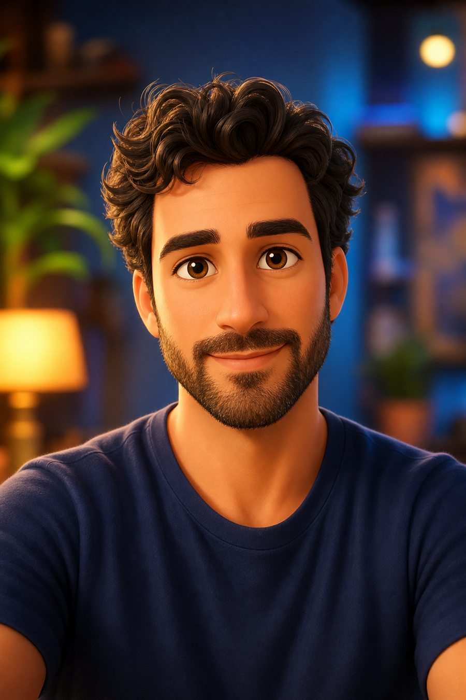
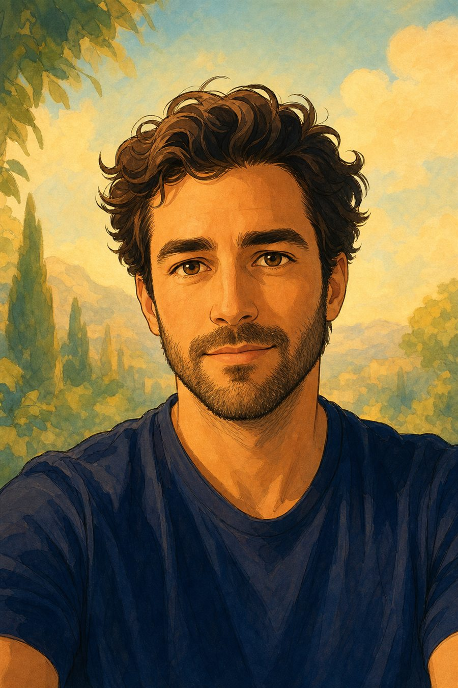
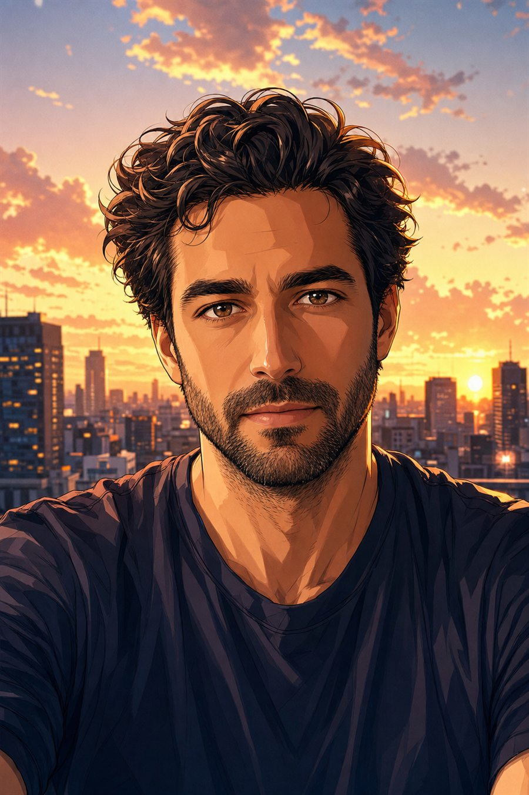
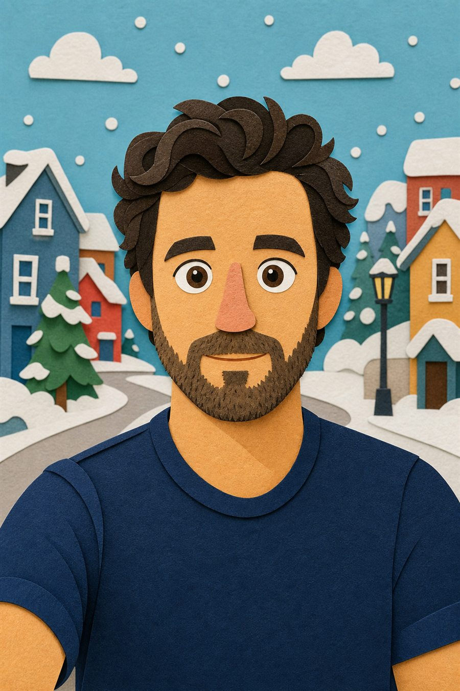
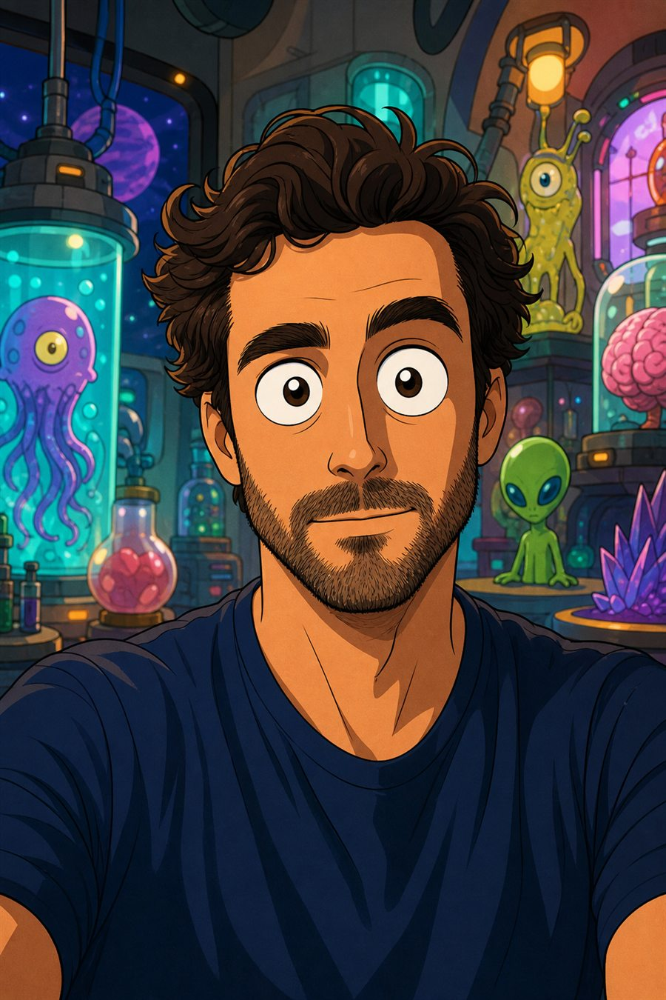
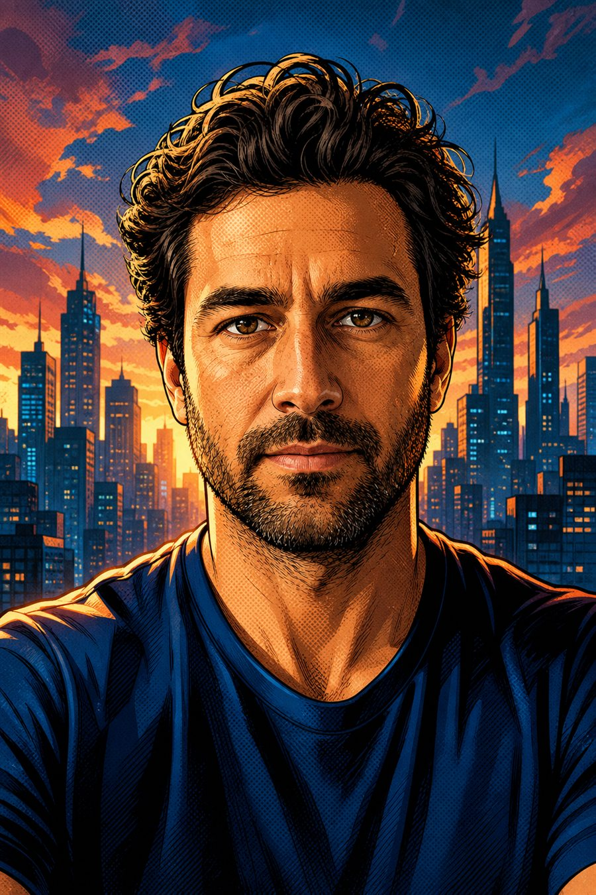
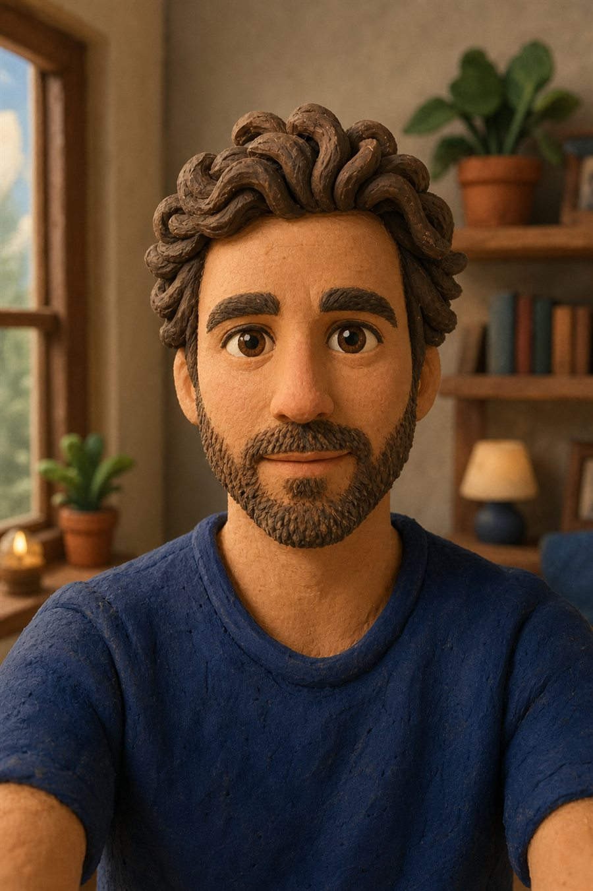

Как сделать мультперсонажа из фотографии с помощью ИИ
Одна фотография — и нейросеть онлайн может сделать десятки мультверсий: жёлтый 2D-сериал, LEGO-минифигурку, аниме, 3D-персонажа, комикс, пластилин и другие понятные стили.
- 1Выбери чёткое фото, где хорошо видно лицо, волосы и одежду.
- 2Загрузи фото в GPT Image 2 или Nano Banana PRO онлайн.
- 3Выбери один из 10 стилей ниже и скопируй готовый промпт.
- 4Попроси ИИ сохранить узнаваемость: лицо, причёску, бороду, одежду и ракурс.
- 5Если результат слишком похож на конкретного героя, попроси сделать оригинального персонажа в похожей эстетике.
- 6Сохрани лучший вариант и при необходимости уточни фон, эмоцию или степень мультяшности.


В стиле «Симпсонов»
Жёлтая сатирическая 2D-стилизация: простые формы, крупные глаза, яркий фон и дружелюбная мимика.

LEGO-минифигурка
Игрушечная минифигурка из конструктора: пластиковая фактура, печатная борода, синий торс и яркий игрушечный фон.

Миядзаки-вайб
Тёплая японская сказочная анимация: акварельный фон, мягкий свет, уютная атмосфера и ручная линия.

Глянцевая 3D-анимация
Полированная 3D-анимация: округлые формы, большие глаза, мягкий кинематографичный свет и аккуратная студийная картинка.

Классическая сказочная 2D-анимация
Сказочный 2D-портрет: чистая линия, мягкий фон, тёплая палитра и образ доброго героя.

Аниме
Современное аниме: чёткий контур, выразительные глаза, динамичные волосы и городской закатный фон.

Бумажная cutout-анимация
Бумажная cutout-анимация: плоские формы, текстура бумаги, простая мимика и нарочито смешной вид.

Sci-fi мультсериал
Sci-fi мультсериал: тонкий контур, лаборатория с пришельцами на фоне, яркие цвета и немного абсурда.

Супергеройский комикс
Супергеройский комикс: жирный контур, полутоновая фактура, драматичный свет и городской skyline.

Пластилиновая анимация
Пластилиновая stop-motion стилистика: ручная фактура, скульптурные волосы, мягкий свет и уютная миниатюрная сцена.
Загружаю фото человека. Сделай из него оригинального мультперсонажа в стиле жёлтого сатирического семейного 2D-мультсериала: простые формы, крупные глаза, яркие плоские цвета, доброжелательная смешная мимика. Сохрани узнаваемость человека, причёску, бороду, цвет одежды и ракурс. Не копируй конкретного существующего персонажа. Без текста, логотипов, рамок и водяных знаков.
Загружаю фото человека. Преврати его в игрушечную минифигурку из конструктора: цилиндрическая голова, клипсы вместо кистей, пластиковая фактура, напечатанные детали бороды и причёски, синий торс. Сохрани узнаваемые черты по фото. Не добавляй бренды, логотипы и надписи. Вертикальный портрет, без рамок и водяных знаков.
Загружаю фото человека. Сделай из него оригинального персонажа в тёплой японской сказочной анимации: мягкая акварельная фактура, уютный фон, ручная линия, выразительные глаза, спокойная добрая атмосфера. Сохрани узнаваемость, причёску, бороду, одежду и позу. Не копируй конкретного художника или существующего героя. Без текста, логотипов, рамок и водяных знаков.
Загружаю фото человека. Преврати его в оригинального персонажа глянцевой семейной 3D-анимации: округлые формы, выразительные глаза, стилизованные волосы, мягкий кинематографичный свет, аккуратный цветной фон. Сохрани основные черты лица, бороду, причёску и синюю футболку. Без текста, логотипов, рамок и водяных знаков.
Загружаю фото человека. Сделай из него оригинального персонажа классической сказочной 2D-анимации: чистая линия, мягкий рисованный фон, тёплая палитра, доброжелательный геройский образ. Сохрани узнаваемые черты, волосы, бороду, одежду и ракурс. Не копируй существующих персонажей. Без текста, логотипов, рамок и водяных знаков.
Загружаю фото человека. Преврати его в современного аниме-персонажа: чёткая линия, выразительные глаза, динамичные волосы, аккуратная cel-shading покраска, стильный городской фон на закате. Сохрани бороду, причёску, одежду, позу и узнаваемость человека. Без текста, логотипов, рамок и водяных знаков.
Загружаю фото человека. Сделай из него оригинального персонажа в бумажной cutout-анимации: простые геометричные формы, круглые глаза, минимальная мимика, текстура цветной бумаги, фон маленького городка. Сохрани бороду, причёску и синюю футболку. Без текста, логотипов, рамок и водяных знаков.
Загружаю фото человека. Преврати его в оригинального персонажа комедийного sci-fi мультсериала: тонкие чёрные контуры, слегка преувеличенные глаза, лаборатория с пришельцами и приборами на фоне, яркая сюрреалистичная атмосфера. Сохрани волосы, бороду, синюю футболку и узнаваемость. Не копируй существующих героев. Без текста, логотипов, рамок и водяных знаков.
Загружаю фото человека. Сделай из него оригинального супергеройского комикс-персонажа: жирный ink-контур, halftone-фактура, драматичный контровой свет, насыщенные цвета, город на фоне. Сохрани лицо, бороду, причёску, синюю одежду и ракурс. Не копируй персонажей Marvel или DC. Без текста, логотипов, рамок и водяных знаков.
Загружаю фото человека. Преврати его в персонажа пластилиновой stop-motion анимации: ручная глиняная фактура, округлые формы, скульптурные волосы и борода, мягкий студийный свет, уютный миниатюрный фон. Сохрани узнаваемость, синюю футболку и портретный ракурс. Без текста, логотипов, рамок и водяных знаков.